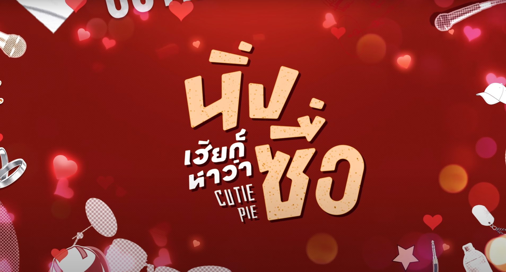

Genre: BL, Romance, Comedy
Country: Thailand
Language: Thai
Seasons: 2
Episodes: 12 (Season 1), 4 (Season 2)
Release Date: Season 1: February 23, 2022; Season 2: March 29, 2023
Where to Watch: Youtube: Mandee Channel, iQIYI
Synopsis
"Cutie Pie" is a Thai BL romance series about Lian Kilen Wang, a serious businessman, and Kuea “Kirin” Keerati, a free-spirited university student and musician, who are engaged through an arranged childhood promise. Initially distant and uncertain about their feelings, Kuea tries to break off the engagement, but Lian invites him to live together, leading them to confront their true emotions. In the second season, as they plan their wedding, they face challenges like Kuea’s idol debut and family expectations. The series explores themes of love, marriage equality, and personal authenticity, highlighting the growth of their relationship from obligation to genuine affection.
Cast
-
Zee Pruk Panich as Lian Kilen Wang
-
NuNew Chawarin Perdpiriyawong as Kuea “Kirin” Keerati
-
Max Kornthas Rujeerattanavorapan as "Yi" Phayak Chatdecha Chen
-
Nat Natasit Uareksit as "Khondiao" Thacha Wongtheerawit
-
Tutor Koraphat Lamnoi as Nuer
-
Yim Pharinyakorn Khansawa as Syn
Why does Ivjiro recommend this series?
Disclaimer: this section reviewed by Ivjiro which may consist of spoilers and opinions about the series.
Cutie Pie is a series that thoughtfully explores themes of love and marriage within the LGBTQ+ community, emphasizing the importance of being true to oneself, as well as the crucial roles of communication, trust, and effort in sustaining a healthy relationship. The story revolves around Lian (played by Zee) and Kuea (played by NuNew), who have been bound by an arranged marriage since childhood due to their families’ wishes. While Kuea openly expresses his affection, Lian remains distant and focused on his work, which ultimately leads Kuea to call off their engagement, highlighting Lian’s lack of emotional investment.A significant aspect of the series is how Kuea hides his true self from Lian, concealing his passion for singing and even his university major. This secrecy underscores the difficulty of being authentic both to oneself and to others. The couple’s failure to communicate openly creates a gap of mistrust and misunderstanding, illustrating that love alone is not enough to sustain a relationship. In episode 11, Kuea rejects Lian’s proposal because he feels suffocated by the inability to be genuine, despite Lian’s awareness of this struggle. This moment powerfully conveys that acceptance begins with self-acceptance, especially in a lifelong commitment like marriage.
Beyond romance, Cutie Pie also beautifully highlights the value of friendship. The bond between Kuea and his friend Kondiao exemplifies true friendship—one built on comfort, honesty, and unwavering support. Similarly, Lian and Yi’s relationship shows mutual understanding and encouragement, reinforcing that strong friendships can provide essential emotional support alongside romantic love.
The second season, Cutie Pie 2 You, showcases the growth and maturity of Lian and Kuea’s relationship. Unlike the first season, where secrets and misunderstandings prevailed, the couple now communicates openly and makes a conscious effort to understand each other. This progression reflects a more balanced and healthy partnership, demonstrating how effort and honesty can transform a relationship.
Overall, Cutie Pie is both entertaining and meaningful, offering viewers valuable lessons about love, authenticity, and communication. It encourages people to embrace their true selves and to foster open, supportive relationships. This series is especially rewarding for those learning not only to love others but also to love themselves.